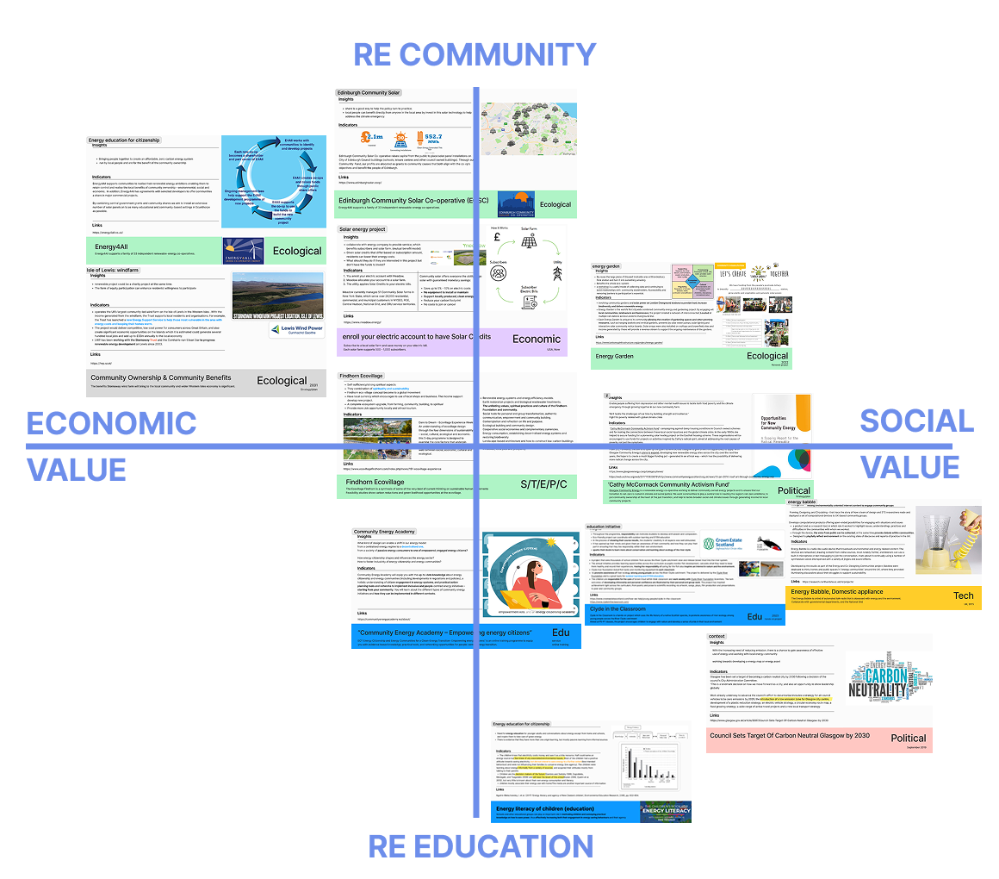
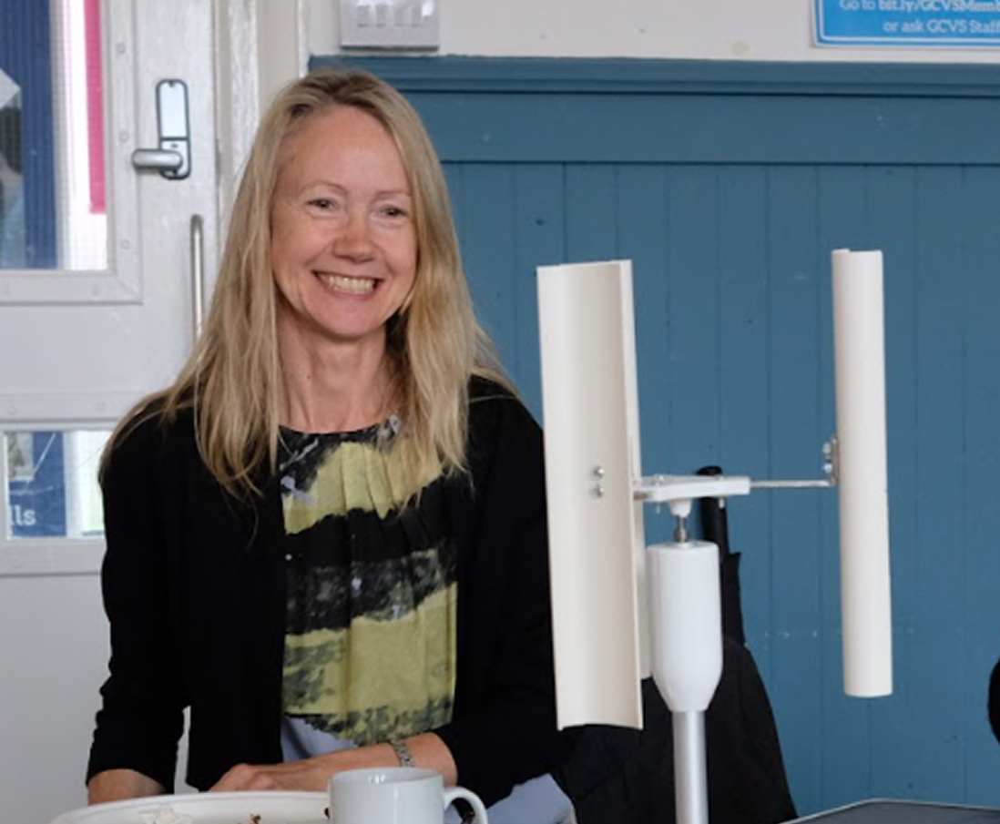
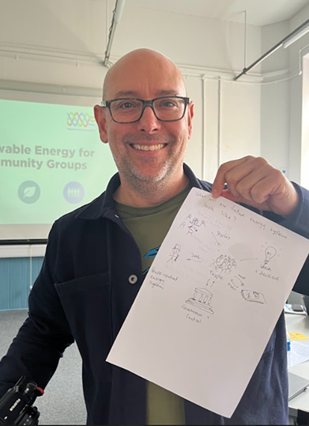
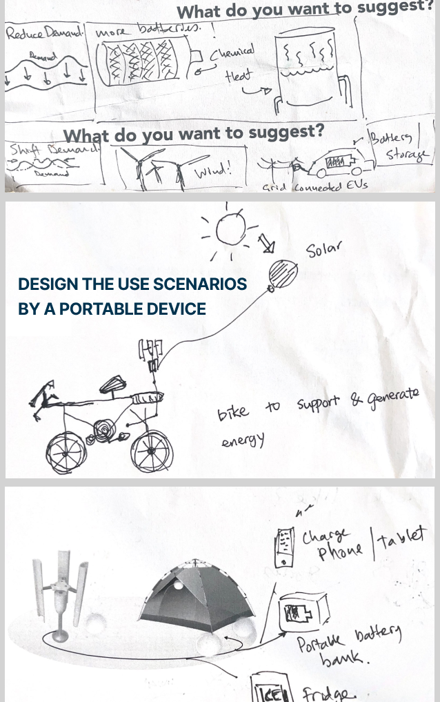
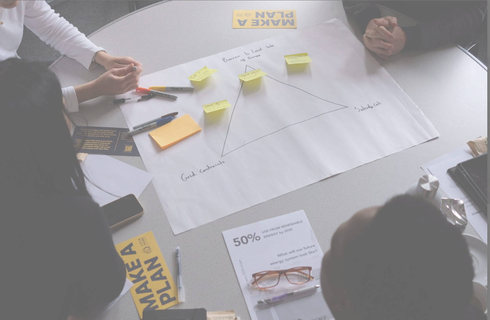
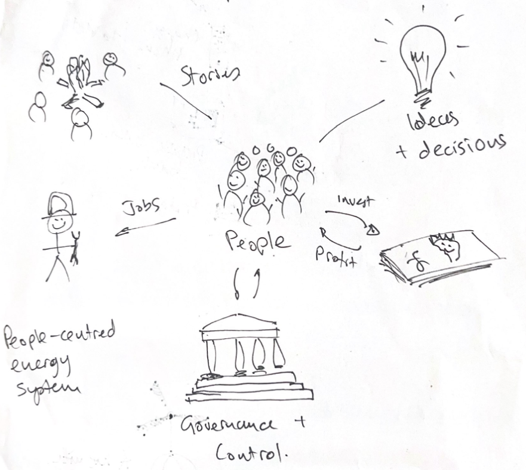

01 — Overall
Strategy
Roadmap to make life
Greener
Despite high media awareness of renewable energy, actual adoption remains low due to technological, financial, and socio-cultural barriers. This design helps people become active energy citizens through renewable energy awareness.
02 — Process &
Scope
The Methodology
- • Desk Exploration: Policy & Eco-villages
- • Field Work: Interviews & Workshops
- • Ideation: Leaflet & Web desing
Key Partners
Collaborated with
Community Energy Scotland
Friends of the Earth Scotland.
03 — The
Challenge
Bridging the Agency Gap
Most people act as "Passive Consumers". Engagement is hindered because:
The Cognitive Shift: Current utility providers communicate in abstract data points like "kWh," which hold zero emotional or practical meaning for the average person.
The Financial Barrier: There is no middle ground between "doing nothing" and high-upfront investments, such as community energy membership fees of approximately £5,500/year.
Social-cultural Inertia: Many residents perceive energy deployment as the government's responsibility, leading to "free-riding" and behavioral inertia.
Insights
Micro-verification: By starting with small, tangible experiments (The Explorer phase), we lower the "Trust Threshold". Once a user verifies a small success, the psychological barrier to high-impact investments, like heat pumps, is significantly reduced.
Lived Experience Metrics: We perform Cognitive Offloading by replacing abstract units with "Lived Experience Metrics". Translating data into "8 hours of balcony work" shifts the focus from consumption to capability.

04 — Overall Strategy
Seedling to Forest
"Energy shouldn't be a passive bill you pay. It’s an active choice you make. We help you move from a passive customer to an energy pioneer through micro-verification—starting with the devices in your hand."
Individual Experiment-Seedling 🌱
Calling for "Institutional Permission and personal action," Made the immediate results being seen.
Social Action - The Meadow 🌿
Joining local cooperatives to share power with neighbors. This builds community resilience.
Collaborative Design-The Forest 🌳
Focus on Participatory Policy. This is where micro-data is aggregated to inform Democratic Energy Strategies.
Workshop



Evidence : Primary research conducted at Resisting Fossil Fuels Workshop, Glasgow 2024.
05 — Stakeholder Synergy
Service Blueprint: Aligning the Ecosystem
Line of Visibility
Syncing personal action with institutional support ensures that the user’s "Active Choice" is met with a functional "Infrastructure Response".
Touchpoints
Libraries and community hubs act as physical bridges across the digital-physical divide, increasing accessibility for high-density urban residents.
Authority
Glasgow City Council provides funding and access to derelict land for community renewable projects.
Manufacturers
Collaborating on technical co-design to ensure portable kits are optimized for urban high-density living.
Community Hubs
Organizations like Friends of the Earth and local libraries act as the "on-ramp" for energy literacy.
Active Citizens
The core contributors providing micro-data and collective action to drive democratic energy strategy.
06 — Future
Readiness
The "Green Dream" vs. Reality: While the vision is forward-looking, this project aiming to transform a "Green Dream" into a Verifiable Daily Reality by providing the tools for individual navigation of complex systems.


